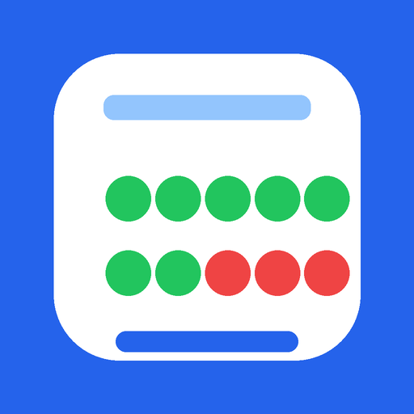

A lightweight tool for recording ten trials per replacement or acquisition program. For each trial, record a Positive or Negative response, monitor progress to 10/10, correct the most recent entry with Undo, and keep the day’s data available until you choose to clear it.

Configurable 10-trial tracking with Positive / Negative outcomes.
Each user creates the program list needed on that device. The app focuses on fast trial entry rather than clinical interpretation.
Each program automatically stops at 10/10, helping prevent accidental extra entries.
Record one outcome for each trial and see the running totals immediately.
Correct the most recent entry quickly if the wrong outcome was tapped.
Add, edit, delete, import, export, or share replacement and acquisition program names.
Trial outcomes, date, setting, and notes remain locally available after closing the app until Clear Daily Data is used.
Open the web app in a supported browser and configure it directly on the device.
Once added, ABA Trial Counter opens from its own icon like a standalone app.
Open the counter, configure your program list, and begin recording trials.